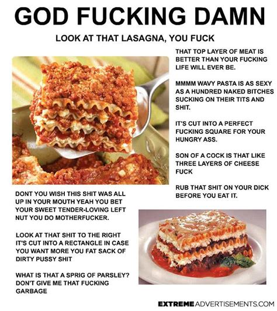

lasagna
recetas
tenes antojo de lasagna? acá te vamos a ayudar. vas a comer la mejor lasagna de tu vida

ingredientes
acá estan los ingredientes para q te quede una lasagna barbara
- masa
- carne
- salsa de tomate
- parmesano
pasos a seguir
para la mejor lasagna es fundamental q sigas los siguientes pasos al pie de la letra. si no lo haces en orden no te va a salir, quedas avisado
- vestirse (fundamental)
- utilizar algún medio de transporte para llegar al restaurante
- leer el menú y buscar en donde dice lasagna
- pedirle al mozo amablemente q te de una lasagna
- esperar a q llegue la lasagna (este paso es importante para poder recibir la lasagna)
- comer la lasagna